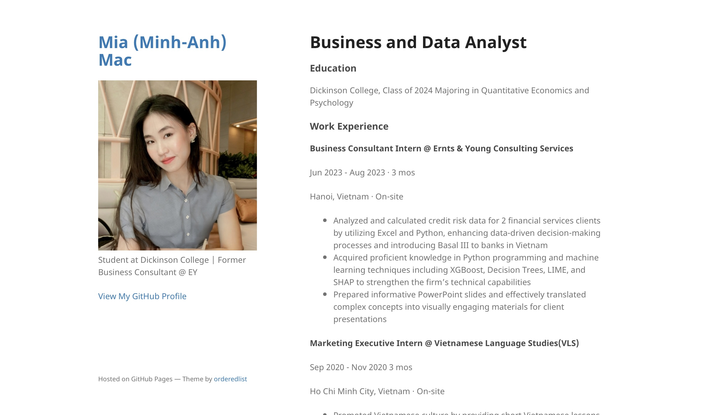
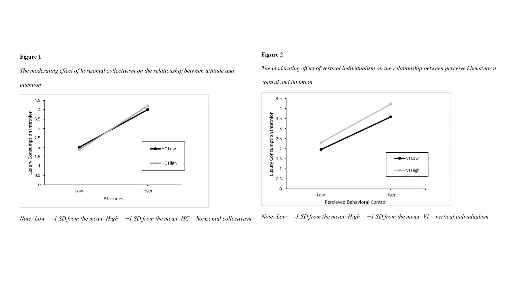
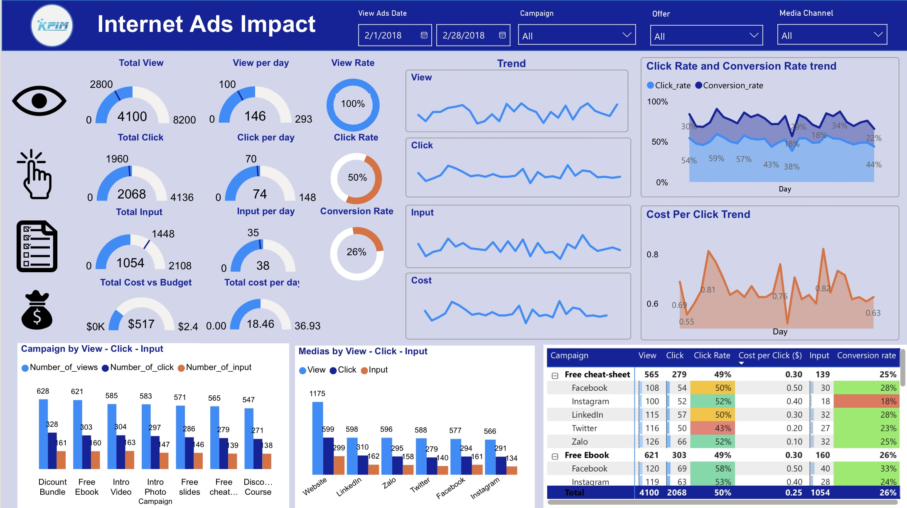
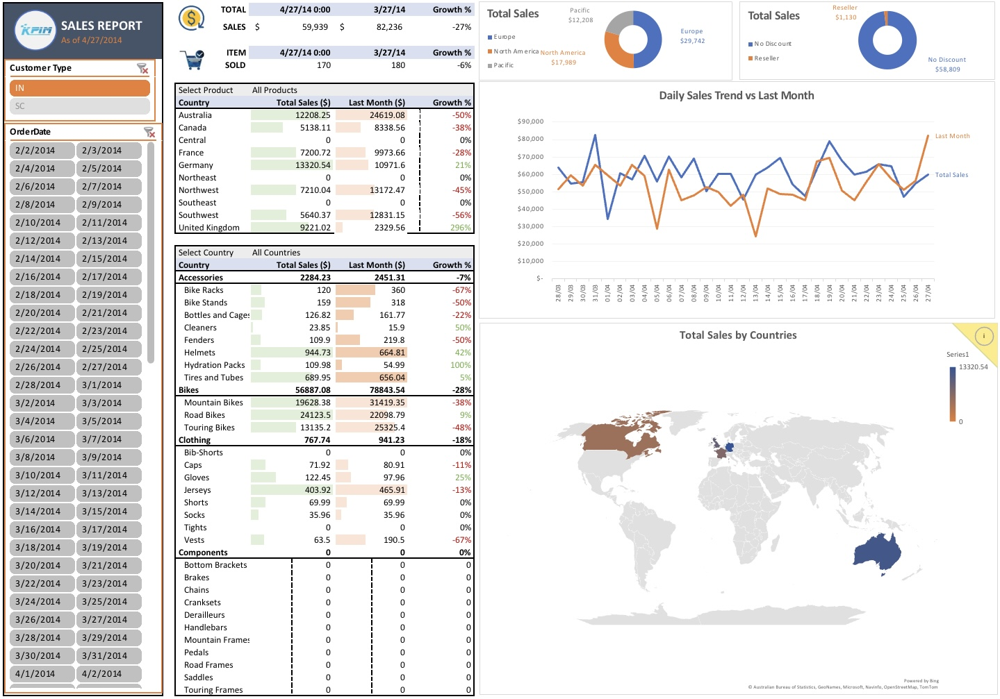
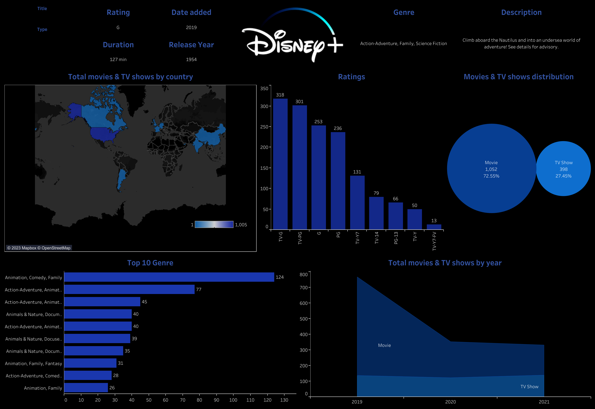
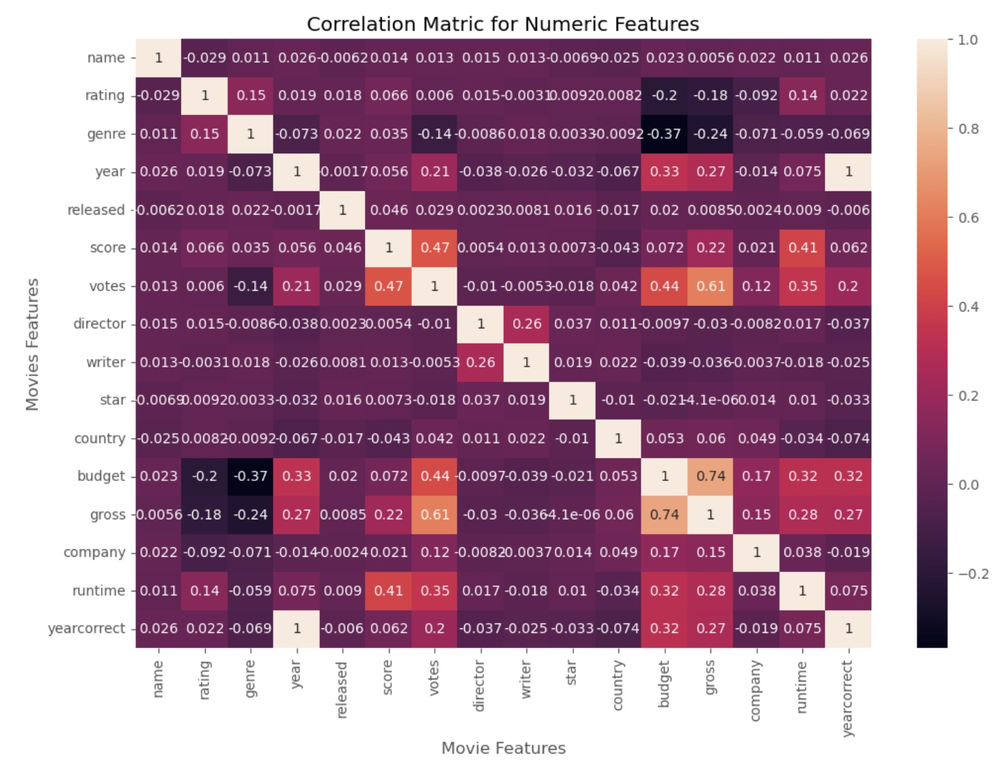

I'm Mia Mac, a driven senior at Dickinson College double majoring in Quantitative Economics and Psychology. Skilled in Excel, PowerBI, SQL, SPSS and more, I turn data into insights. With business experience refining my analytical abilities, I'm a creative, organized team player and problem-solver. Seeking a Business/Data Analyst role post-graduation where I can leverage my expertise on impactful projects. Eager to connect with professionals about opportunities aligned with my goals. Contact me via @LinkedIn or mia15062002@gmail.com.


I conducted independent research using SPSS for a multiple regression analysis of data I collected to examine how attitude, subjective norms, and perceived behavioral control relate to luxury purchase intentions, and if individualism-collectivism moderates these relationships.

I utilized Power BI to craft a comprehensive dashboard comprising charts, graphs, and matrix tables, enabling the in-depth analysis of promotion campaigns across various social media channels throughout the year 2018. Leveraging functionalities such as Drill-down, Tooltips Page, Drill-through, Buttons, and Bookmarks, I enhanced the dashboard's interactivity and functionality. Through this tool, I was able to offer robust insights for each campaign, delving into metrics such as click quantity, views, inputs, and conversion rates.

I used Excel to create a sales dashboard with charts, graphs, and pivot tables, for KPIM Corporation, an artificial bike manufacturing company, which can be updated with new data. This provided insights into promotion impacts on sales growth for KPIM's products and territories.

I used Tableau to create a comprehensive dashboard visualizing global distribution of Netflix content with dynamic graphs and maps that can be seamlessly updated. I analyzed and presented data on movie/show ratings, distribution, categories, and attributes to inform decision-making.

I undertook a Python-based Movies Correlation Project where I managed data cleaning, visualization, and regression analysis to uncover correlations between variables like votes and gross earnings. In this project, I delved into a comprehensive set of movie-related data, covering details such as titles, directors, cast, release dates, ratings, durations, revenues, and votes. Through this exploration, I aimed to derive valuable insights into the various factors influencing gross revenue in the realm of movies.